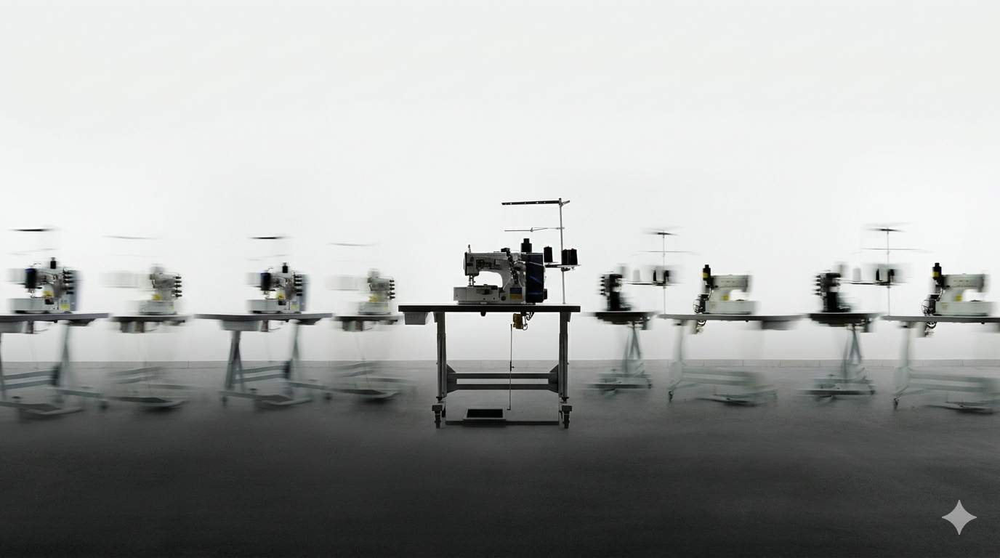

Current Exhibitions
"Second Skin" explores the boundary between garment and device. Featuring smart textiles, embedded sensors, and haptic feedback wearables, this exhibition traces how fashion designers are merging clothing with technology.
"Digital Drape" showcases the rise of AI-generated fashion and virtual garments. Designers are using machine learning to create patterns, silhouettes, and textures that no human hand could produce alone.

"Thread & Code" traces the history of textile machinery to modern computational design. From the Jacquard loom to algorithmic knitting, this exhibition reveals how code has always been woven into fabric.
Featured Video